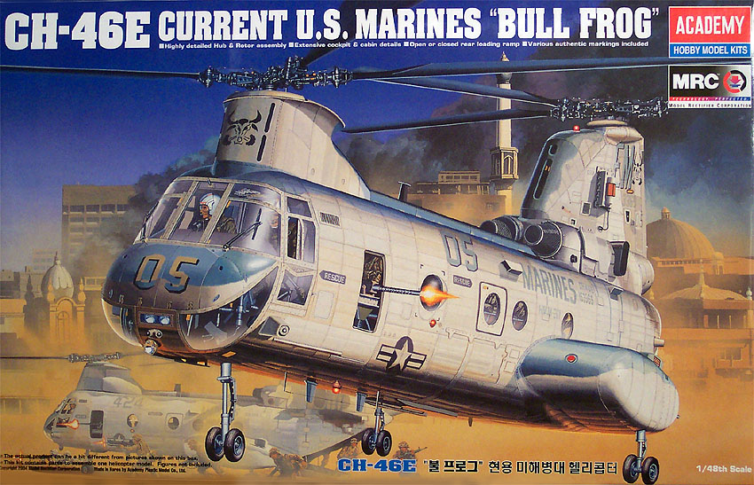
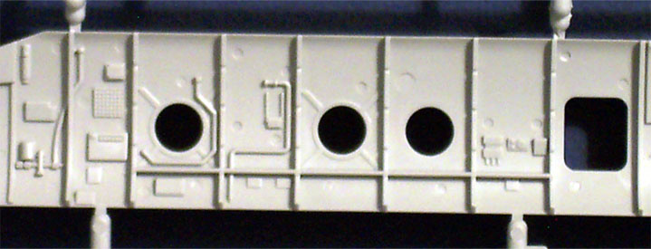
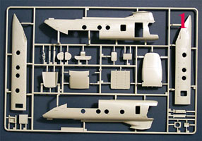
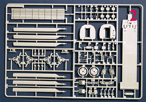
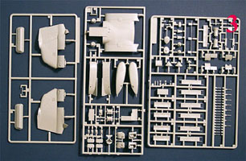
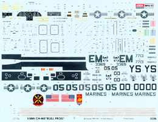
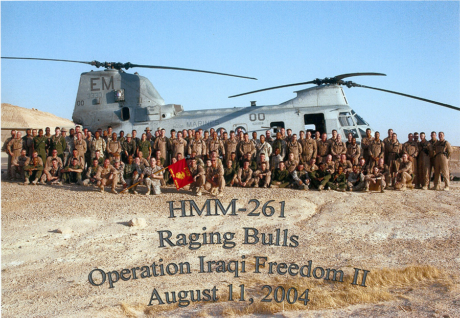

{kind=link}
{kind=link}
{kind=link}
{kind=link}
{kind=link}


Academy 1/48 Boeing CH-46E “Bull Frog”

Kit #2226 MSRP $49.50
Images and text Copyright © 2004 by Matt Swan
Developmental Background
In 1958, Boeing/Vertol completed a company-sponsored prototype of a new tandem rotor helicopter design developed as the YHC-14 due the US army 's request for a medium-size turbine powered helicopter. Tandem rotors have been a feature of all production helicopters built by Boeing/Vertol, and its original predecessor company, Piasecki. Powered by two Lycoming T-53 turbine engines and intended for potential military or civilian use the project was soon cancelled to allow for development of the CH-47 Chinook by the same company. However, the US marines tested a modified version, the Model 107M that was soon accepted as the HRB-1 and in 1961 received the designation CH-46
The Boeing CH-46 Sea Knight helicopter has faithfully served the US Navy and Marine Corp since the early 1960s. Its tandem rotor design sets it apart from other single rotor Navy and Marine helicopters and gives the Sea Knight excellent stability, powerful lifting capability and superior handling in difficult weather conditions. This venerable aircraft's primary mission is to provide all-weather, day/night, night vision goggle (NVG) assault transport of combat troops, supplies, and equipment during amphibious and subsequent operations ashore. Troop assault is the primary function and the movement of supplies and equipment is secondary. Additional tasks are: combat and assault support for evacuation operations and other maritime special operations; over-water search and rescue augmentation; support for mobile forward refueling and rearming points; aero medical evacuation of casualties from the field to suitable medical facilities. The Marines have given it the nickname bullfrog as the side sponsons and the aircraft nose-up attitude on the ground make it look like a frog ready to hop.
The average weight of the CH-46 is 18,000 pounds, with a maximum lift capability of 6,000 pounds. It can carry 25 combat-loaded troops, or can be outfitted to carry medical evacuation litters in case of disaster. It has the fuel endurance to stay airborne for approximately two hours, or up to three hours with an extra internal tank. The helicopter has the ability to land, taxi in and take off from the water in case of emergency, and is able to stay afloat for up to two hours in two-foot seas. Special features included power-operated folding blades, integral cargo handling provisions, a rear-loading ramp that could be left open in flight, personnel recovery and rescue equipment and provisions for hoisting 10,000 pounds externally. The model 107 was built by license in Japan by Kawasaki as the KV-107 and is also used in Canada as CH-113 Labrador / Voyageur and Sweden as HKP-4. The Boeing V-22 Osprey was intended to be its replacement but with the cancellation of that program and the introduction of various upgrade packages in the 1990s, we’ll probably see this helicopter in service for many years to come.
The Kit
Academy has really put some effort into this kit and over the last few years I have seen a consistent improvement in their new kit releases. No matter how good a kit is there will always be someone who finds fault with it and this kit is no exception to that. When this arrived I was immediately impressed with the large size and weight of the box. The lower half of the box is formed from light-duty corrugated cardboard with the upper half being of heavy-duty sheet cardboard. The combination makes for a very sturdy package able to protect the model from most shipping abuse and provides for excellent stash storage. As you can see from the box-art picture at the beginning of this review there is some really nice graphics involved here as well.

So let’s get this box open and get into the good stuff. Inside we have several sealed poly bags, each of two large trees of parts getting their own individual bags and three smaller trees being grouped in a common bag. The main body of the model has some interesting design features. The inner cabin walls, floor and ceiling are separate pieces (see photo at right) that build up inside the outer walls. The side windows are sandwiched between the two layers of plastic pieces. It seems like the modeler should be able to paint the interior pieces, mask the outer surface of the windows then assemble the pieces and paint the exterior without much trouble. The exterior pieces feature crisply engraved panel lines and raised rivet detail. The main body pieces fit together very well and do not seem to suffer from any warpage and the inner pieces fit in quite well. I could not find any evidence of flash, serious mold separation lines or any sink marks on the model. There are a few injector pin markings on some of the inner surfaces but nothing that should cause a problem.
Inside the cabin we have some choices; we can install flat or blown side windows, stretchers or canvas seat and have options on defensive armament. The rear ramp has three options from fully open to fully closed and the side crew access doors can be built open or closed. The dash and center consol feature raised instrument faces but they don’t have any finer detail relying on decals instead. Flight crew seats are mediocre at best with no lap belts or shoulder harnesses. The clear parts are pretty nice, they feature nice, crisp raised frames and display good clarity right out of the bag. They include the clear nose section, flight crew doors, various side windows and an assortment of lenses. All together the kit includes 197 light gray injection molded pieces and 26 clear parts for a grand total of 223 pieces in the box.



You may click on the images above to view larger pictures
Decals and Instructions
The instructions for the kit consist of a well done twelve page booklet. The cover page includes a good historical background of the helicopter in four languages along with a small three view showing general dimensions of the aircraft. The next eight pages contain sixteen exploded view construction steps with plenty of black and white pictures of real CH-46s to aid in assembly. Color codes, construction options and interior decal placement instructions abound throughout these steps.

This is followed by one page devoted to common aircraft markings and another page showing the peculiarities of three different aircraft. The final page of the booklet contains a parts map and color code chart. It is apparent that a lot of time and effort went into creating this instruction booklet.
Let’s talk about these decals next. We get a very large sheet of waterslide decals for the model. In general the decals look to have good print registry, good color density and appear to not be excessively thick. We have markings here for three different helicopters, all Marine units. Markings are for the Nighthawks, the Golden Eagles and the Raging Bulls. The picture at left is linked to a larger image if you want to click on it. I have used Academy decals in the past and they generally look great on the sheet but have a history of causing problems once you try get them off the sheet or try putting them on a model. I have not tried these yet so final judgment is withheld, for the moment.
Conclusions
Overall we have a very interesting model here. The parts fit is very good, the overall parts design is very good, and the instruction booklet is well done and looks like someone spent a lot of time on it. The decals look good but may hold unpleasant surprises down the road. The cockpit detail leaves something to be desired with the lack of instrument face detail and no seatbelts. This is a real new kit having just come out in 2004 and the aftermarket industry has not caught up to it yet. Eduard has just released a mask set for it and with some luck we’ll be seeing replacement cockpit equipment from Cutting Edge or Black Box. It sorely needs this improvement. Another weak point in the kit is the lack of a folded rotor option, come on guys, this was one of the leading edge developments of this helicopter and it is not offered in the kit!
Even with the few shortcomings of the kit it is well worth having. An important aircraft in the American inventory as well as for many other Allied forces, I give it a good recommendation.
As a final note one of my readers sent this photo in. Her husband is in that crowd and I wanted to post this as a tribute to all those fine men and women who are putting their lives on the line to serve our country and protect our freedoms. Thank you for your sacrifice and thank you to those who have to stay at home and worry about their loved ones welfare.
